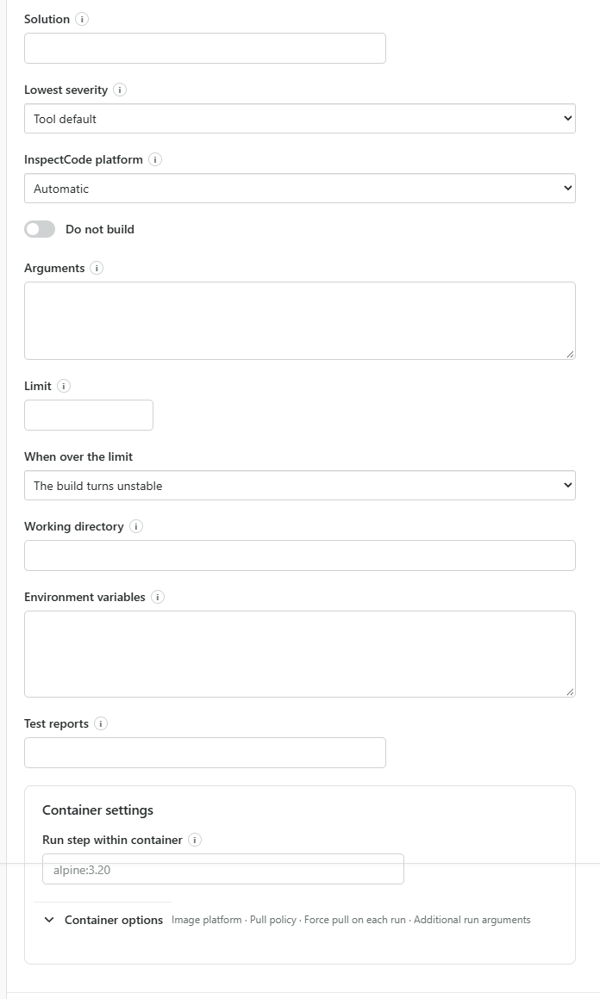

Inspections (ReSharper)
Runs the jb inspectcode command line tool on a solution and lists the issues on the build, as Code Inspections does. The tool is not part of Buildspawn.
When to use it
Use it for C# solutions, including Unity and Unreal Engine C# code, when you have the ReSharper command line tools on the agent.
How to set it up
- Open the build configuration and click Settings › Build Steps.
- Click Add build step. Type
Inspections (ReSharper)in Filter step types if you like, then click the Inspections (ReSharper) tile (group Code quality and coverage). - Type a Step name, for example
Inspect code. - Fill in the fields described below.
- Optional: set Execute step, Conditions and Retry on failure. See The steps list and the step editor.
- Click Save.

Every field
| Field | What it does | Default | Example |
|---|---|---|---|
| Solution | The solution (.sln) or project file to inspect, relative to the working directory. | Empty (required) | Game.sln |
| Lowest severity | Passed as --severity. Issues below it are not reported. Choices: Tool default, Information, Hint, Suggestion, Warning, Error. | Tool default | Warning |
| InspectCode platform | Passed as --x86 or --x64. Automatic passes nothing. | Automatic | x64 |
| Do not build | Passed as --no-build. Use it when an earlier step already built the solution. | Off | On |
| Arguments | One argument per line, for example --properties:Configuration=Release. | Empty | --properties:Configuration=Release |
| Limit | Optional. The step is worse when it finds more issues than this number. Empty means no limit. | Empty | 0 |
| When over the limit | The build turns unstable or The step fails. | The build turns unstable | The step fails |
| Working directory, Environment variables, Test reports, Run step within container | The same in every runner. See Fields every runner has. |
A worked example
Inspect the game solution after the build. Step name Inspect code, Solution Game.sln, Lowest severity Warning, tick Do not build.
What you see when it runs
The console shows $ jb inspectcode Game.sln --severity=WARNING --no-build …. The issues are listed on the Code Inspections page of the build.
Problems and fixes
| Problem | What to do |
|---|---|
| The jb command was not found on this agent | Install the jb command with inspectcode or put jb on the PATH. |
| The … step has no solution to inspect | Fill in Solution. |
| The solution must be a file name | A name that starts with a dash or holds a line break is refused. |